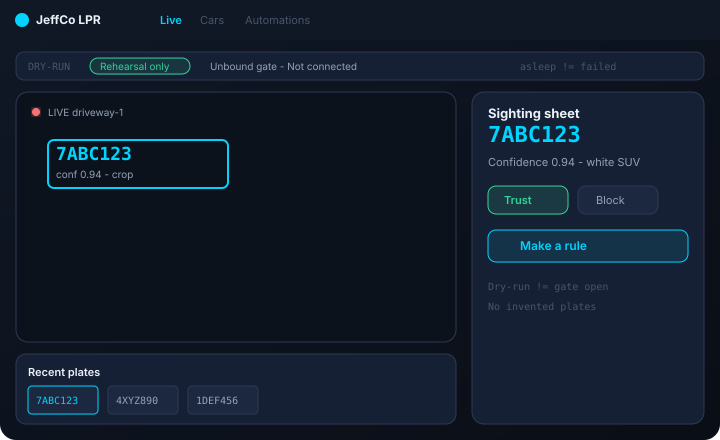
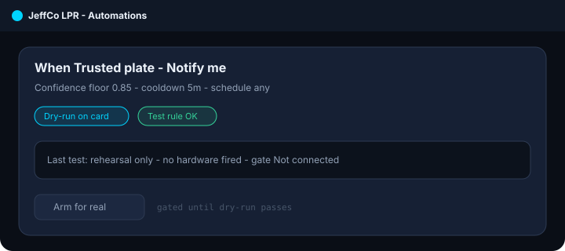
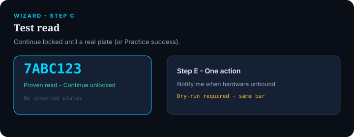

LPR
Driveway-grade license plate recognition — see a plate, trust it, automate the gate without platform theater.
For site operators who want Live · Cars · Automations and a five-minute first plate — not a surveillance suite setup maze.

What it does
LPR turns a camera into a plate console: live sightings, a Cars CRM for trusted/blocked plates, and plain-English automations (notify, lights, gate) with dry-run before hardware fires.
First-run is a driveway install: add a feed, draw where cars drive, prove a real read, set trust, then one safe action — Notify me if nothing is bound yet.
Day one focuses on plate read, color/attrs where ready, and media crops. Heavier workers (MMR, speed, geo, multicam, watchlists) stay under More capabilities until you need them.
Sleeping workers are not errors. Unbound hardware is “Not connected,” not a red fault. Activity badges real fails — not quiet OK.
Capabilities
Day-one surface vs Advanced / gated — from Clarity GH Pages pack.
Day-one surface
Live
Day oneFeed + recent plate strip + sighting sheet (crop, confidence, Trust / Block / Make a rule)
Cars
Day oneSearch, Trusted / Blocked, plate timelines
Automations
Day oneEnglish rules with confidence floor, cooldown, schedule, dry-run on-card
Setup
Day oneInputs (ROI), Features (asleep ≠ broken), Hardware (gate/lights pulse test)
Wizard
Day oneFeed → ROI → test read gate → trust → one action
Advanced / gated
MMR / speed / geo / multicam
AdvancedDense watchlists, raw track graph / merge-split
Alarm-disarm rules
AdvancedConfirm + warning — not day-one defaults
Per-stream overrides
AdvancedWhen you need them — not setup maze
How to use it
First-run (wizard)
Add a feed
Camera or Practice feed.
Draw ROI
Where plates appear.
Test read
Continue locked until a real plate (or Practice success).
Trust
Mark known vehicles if you want.
One action
Notify / lights / gate when bound, or Notify me / Skip; dry-run required.
Daily loop
Watch Live
New sightings; open the sheet to Trust, Block, or Make a rule.
Maintain Cars
Lists and timelines.
Edit Automations
Test rule (no hardware), then arm when confident.
Pulse-test Hardware
After bind changes.
Check Activity
Triggered / failed / cooldown skips and camera/worker health.
Honesty / trust
Clarity LPR honesty — plate ops without theater.
- Dry-run ≠ gate open. Rehearsal never fires actuators; success copy must say rehearsal only.
- Unbound ≠ error. Missing gate/lights stay quiet “Not connected.”
- Sleeping ≠ failed. Worker asleep/muted chips — red only for real faults.
- Wizard never dead-ends — Notify me when hardware unbound; same dry-run bar.
- No invented plates — Continue locked until a proven read on Step C.
- Privacy/retention follow site policy; Compliance checklist exists for state/deploy review.
Screenshots
Brochure frames elevated from Design UI mocks.


Plate timelines
From Design-jeffco-lpr-ui-mocks/cars.html
Get started
Wire module path / docs when Builder queues the Pages deploy.